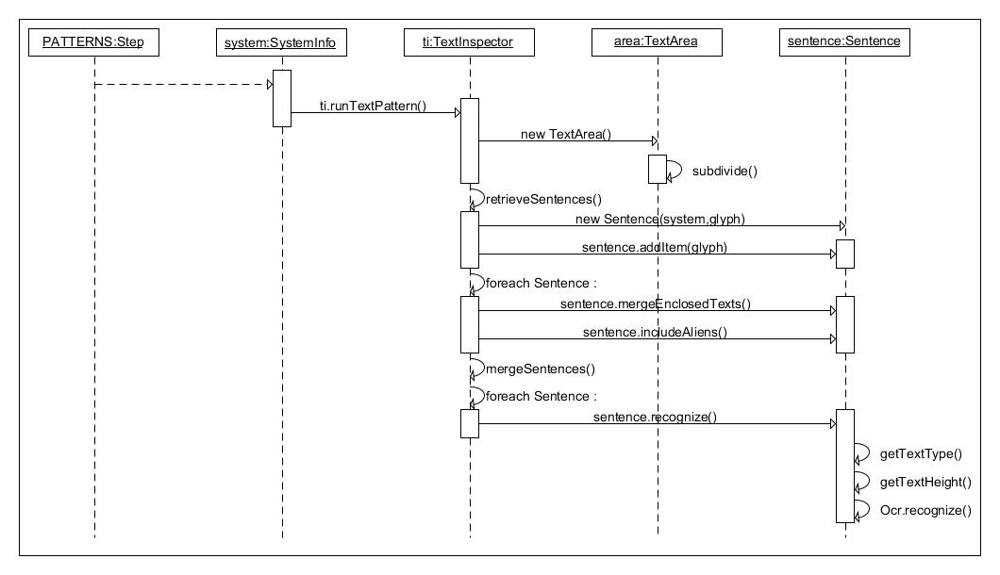

Package dedicated to the handling of textual aspects.
General processing

How textual glyphs are handled
Glyphs selection
The general idea is to come up with glyphs that are very likely to
correspond to real text. Such glyphs are assigned a textual Shape, that
is either the Shape TEXT or the Shape CHARACTER. Glyph candidates come
from 3 sources:
- Standard glyph creation by section aggregation or glyph
aggregation. This bottom-up strategy is implemented in {@link
omr.glyph.GlyphsBuilder#retrieveGlyphs}
- Specific area division, starting from rectangular area at system
level, then subdivision along horizontal and vertical axes. This
top-down strategy is implemented in the {@link
omr.glyph.text.TextArea} class.
- Individual glyph assignment by user manual interaction.
Glyphs processing
The special processing for textual glyphs is triggered during the
PATTERNS step, which among other patterns, calls the {@link
omr.glyph.text.TextInspector#runTextPattern} method.
Working at a system level, this method does the following:
- Retrieve additional textual glyphs (see the area division,
as described above),
- Retrieve alignments of textual glyphs into instances of
{@link omr.glyph.text.TextLine}
- Process each TextLine in sequence:
- Make sure no textual glyphs overlap (see {@link
omr.glyph.text.Sentence#mergeEnclosedTexts})
- Try to aggregate non-textual glyphs that may exist on
the line (see {@link
omr.glyph.text.Sentence#includeAliens})
- Merge sentences close to each other via
{@link omr.glyph.text.TextInspector#mergeSentences}.
- Finally, try to recognize each retrieved sentence
through {@link omr.glyph.text.Sentence#recognize} which
uses the OCR feature provided by the Tesseract
tool.